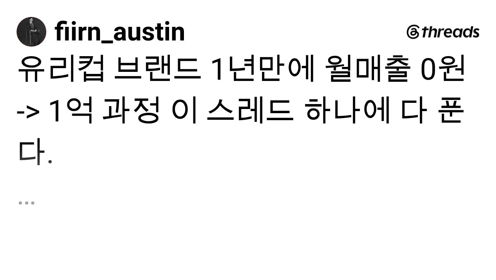

1
오프닝
유리컵 브랜드 1년만에 월매출 0원 -> 1억 과정 이 스레드 하나에 다 푼다. 속도 빠르니까 정신붙들고 읽어
Threads Archive / 2026-07-29
fiirn_austin이 공유한 유리컵 브랜드 성장 스레드를 본문 흐름과 댓글 반응까지 읽기 쉬운 아카이브로 정리했다.
유리컵 브랜드 1년만에 월매출 0원 -> 1억 과정 이 스레드 하나에 다 푼다. 속도 빠르니까 정신붙들고 읽어
엄한 페이드(메타, 구글, 네이버) 기웃거리지 말고 스토리텔링 기반 탄생비화 릴스부터 만들어라. 이걸 왜 만들었고 어떻게 만들었고 그래서 누구한테 적합한지. 한번 올려서 조회수 안나왔다고 안올리면 끝이다. 5번이고 10번이고 같은 주제로 터질 때까지 올려라. 근데 10번 올려서 안 터지면 제품이 문제일 수도 있다.
제품이 진짜 별로가 아니라면 스토리텔링 영상이 조회수 10만이 나올 거다. 그 영상이 그 브랜드의 정체성이자 먹여살릴 스크립트다. 잘 보관해놔라. 10만 조회수 정도 나오면 오가닉으로 월 매출 1000만원 정도 더 생긴다. 근데 이걸 메타를 일 예산 30만원 정도 돌리면 ROAS가 5~600%가 나온다. 30만원에 ROAS 5~600%면 일매출 150만원, 월매출 5000만원 달성할 수 있다. 광고 외에 5000만원을 도달하기 위해서 꼭 필요한 선행조건이 2개 있다.
ROAS 폭발하면 제일 먼저 재고가 빠질 거다. 이때 재고를 얼마나 빠르게 채울 수 있는가가 성장의 키포인트가 된다. 제품의 경우 생산 리드타임이 있어 재고가 한번 빠지면 다음 생산 때까지 오랜 시간이 걸리고, 그 생산 동안 고정비가 빠지게 되면 벌어놓은 수익을 까먹게 된다. 바로 중국 공장 찾아가서 공장 사장님이랑 고량주 각 1병 맞다이 뜨면서 따거따거 하면서 1억치 재고만 미리 만들어놔달라고 하고 입고 때 비용 지불한다고 한다. 서로 만취라 ok 해주신다. 그럼 정산이 되는 대로 재고를 채울 수 있는 상황이 된다.
위 조건이 충족되면 돈만 있으면 되는데 여기서 중요한 게 정산 속도이다. 무조건 스마트스토어, 네이버페이 주문형, 쿠팡 빠른정산 세팅하고 그쪽으로 트래픽 몰아서 정산 사이클을 단축시켜야 한다. 이러면 입고 -> 판매 -> 정산 -> 입고 사이클이 매우 빠르게 돌아간다. 물론 대출 여력이 된다면 신보, 기보를 이용하는 것도 좋다.
초반엔 돈이 없기 때문에 한번에 많은 재고를 가져올 수 없다. 한번에 많은 광고비를 지출할 수도 없다. 추가로 도소매의 경우 마진이 크지도 않다. 이걸 이겨낼 수 있는 게 사이클의 속도이다. 매달 1일을 시작으로 본다면 다음 고정비가 나가기 전, 즉 1달 이내에 전체 재고 순환 사이클을 최소 3바퀴 돌려야 한다. 고정비가 지출되기 전에 반복 재투자를 통해 사이클을 높이면 순간적으로 성장이 엄청나게 빠르게 이루어진다.
피른은 그렇게 월 2000만원 -> 1억 성장을 3달 만에 이뤘다. 이 사이클을 만들 수 있는 조건은 1. 브랜드 중심이 될 수 있는 스토리텔링 콘텐츠, 2. 유연한 재고 컨디션 확보, 3. 빠른정산이다. 마지막으로 위 속도를 만들기 위해서는 빠르고 많은 재투자가 필요한데 재투자를 하려면 재고, 광고, 물류비 외 비용이 0원이어야 한다. 즉 1인으로 재택으로 해야 한다.
위 상황을 반복하면 스토리텔링 콘텐츠로만, 메타로만 월 1억까지는 무난하게 도달이 가능하다. 물론 월 1억 이후는 또 다른 전략과 세계가 펼쳐진다.
팔로우하면 1억까지 가는 과정에서 있었던 썰들, 2억까지 가는 과정도 볼 수 있다. 추가로 교육도 들으면 저 과정들 AI도 얹어서 사업에 이식해준다.

Threads Open Graph 메타데이터에 포함된 이미지를 저장소에 보존한 복사본입니다.
물류와 컨테이너 단위
참고로 물류가 중요하다. 즉 한 컨테이나에 제품 몇개가 들어가는지 계산 잘해야한다. 물류 생각하면 컨테이너 단위로 들어와야 하는데 컨테이너 한개를 얼마만에 팔 수 있는지가 관건이다. 그래서 제품의 부피와 객단가 계산을 잘해야한다. 이상 월 5억까지 팔아본 장사꾼의 군말이다.
좋아요 33
이커머스 핵심 요약 반응
와 ㅋㅋㅋ 여기에 이커머스 중요한 내용 다있네 어느 제조 유통 다 동일 ㅋㅋㅋ
좋아요 38
실무 리스크 관점
좋은 인사이트 잘 봤습니다. 다만 실무 관점에서 몇 가지는 조심스럽게 짚고 싶네요. 사례는 정말 대단하지만, 하나의 성공 사례를 일반화된 공식처럼 받아들이기엔 조심스러운 부분이 있는 것 같습니다. 같은 조건에서 시도했다가 재고만 안고 어려워진 케이스도 분명 있을 텐데, 그런 이야기는 잘 드러나지 않아서 생존자 편향일 가능성도 염두에 둬야 할 것 같습니다.
그리고 ROAS 500~600%를 계속 유지된다는 전제로 계산하신 부분도, 실제로는 같은 소재를 반복 집행하면 피로도가 쌓여서 시간이 지날수록 떨어지는 경우가 많더라구요. 초반 스파이크 수치를 월 단위로 그대로 곱하는 건 다소 낙관적인 계산이 아닐까 싶습니다. 공장 사장님과의 구두 계약 에피소드도 재미있게 읽었지만, 계약서 없이 진행하는 건 리스크가 꽤 크지 않을까 하는 생각이 듭니다. 저라면 조금 더 안전장치를 두고 싶네요.
좋은 글 감사합니다. 배울 점은 많지만 그대로 적용하기보다는 각자 상황에 맞게 걸러서 봐야 할 것 같아요.
좋아요 10
스토리텔링이 핵심이라는 반응
이커머스 기초내용 여기서 다 배우네요. 1번이 가장 중요한 것 같아요. 스토리텔링으로 찐팬 만드는 게 가장 어려우면서도 핵심인 내용이라고 생각됩니다.
좋아요 1
짧은 반응 모음
실무자 반응
ROAS랑 사이클 속도 얘기 안하면 끝까지 안 읽어야지했는데 찐 실무 내용들만 적혀있네요. 팔로하고 갑니다. 다른분들 댓글도 유용하네요.